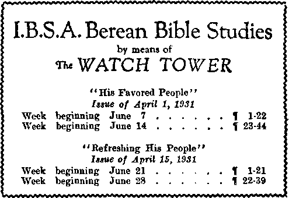

No. 8
.130. 144
Upon the earth distress of nations, with perplexity; the sea and the waves roaring; men’s hearts falling them for fear, and for looking after those things which are coming on the earth: for the powers of heaven shall be shaken* . * . When these things begin to come to pass. then know that the Kingdom of God is at hand. Look up, and lift up your heads; for your redemption draweth nigh.—Luke 21:25-31; Matthew 24:33; Mark 13:29.
THE WATCH TOWER AND HERALD OF CHRIST'S PRESENCE
Vol. LII
Semi-Monthly
MAY 1, 1931
CONTENTS
Encouraging the Faithful .....__...._________
A Good Man_______________________..................
The Sabbath __________________________________________
In the Days op Noah _______________________________
Service Leaders and Regional Directors Good Hopes for 1931-1932 .........................
Letters ...................................................
Grateful to Jehovah .......................
Joy in Going from House to House
Berean Bible Studies___________
Service appointments ____________________
Watchtower Service Week ____—_____
Berlin Convention _________________________
Convention ____________________________________
Radio and the Printed Word______
Service Conventions ---------------------
..131 .135 .138 .140 .142 ..142 .143 ..143 ..143 .143 .144 .130 ..130 ..130 ..130
May
"I will stand upon my watch and will set up foot upon the Tower, and will watch to see what He will say unto me, and what answer I shall make to them that oppose me."—Habakkuk 2.
THIS JOURNAL
ITS SACRED MISSION
HIS journal is published for the purpose of aiding tho people to understand Jehovah’s purposes. It provides systematic Bible study in which all its readers may regularly engage. It gives announcement of the visits made to Bible classes by traveling speakers, announces conventions, and gives reports thereof. It announces radio programs and publishes suitable Bible instruction for broadcasting.
It adheres strictly to the Bible as God’s revealed Word of Truth. It stands firmly upon the great ransom sacrifice as tho fundamental doctrine by which all doctrines are measured. It is free from parties, sects and creeds of men. It does not assume a dogmatic attitude, but confidently invites a careful examination of its utterances in the light of the infallible Word of God. It does not indulge in controversies, and its columns are not open to personalities.
TO US THE SCRIPTURES CLEARLY TEACH
THAT JEHOVAH is the only true God, the Maker of heaven and earth, and is from everlasting to everlasting; that the Logos was the beginning of his creation; that the Logos became a man; that he is now the Lord Jesus Christ in glory, clothed with all power in heaven and in earth.
THAT GOD created the earth for man, and created perfect man for the earth and placed him upon it; that man wilfully disobeyed God’s law and was sentenced to death; that by reason of Adam’s wrongful act all men are born sinners and Without the right to life.
THAT JESUS was made a human being in order that he might become the Redeemer of man; that he gave his life a sacrifice for man and thereby produced the ransom price; that Jesus the divine was raised from the dead, ascended into heaven, and presented the value of his human sacrifice as the redemptive price for man.
THAT FOR MANY CENTURIES God, through Christ, has been selecting from amongst men the members of his church, which constitutes the body of Christ; that the mission of tho church is to follow in the footsteps of her Lord Christ Jesus, grow in his likeness, give testimony to the name and purpose of Jehovah God, and ultimately be glorified with Christ Jesus in his heavenly kingdom; that Christ, Head and body, constitutes the “seed of Abraham’’ through which all families of the earth shall be blessed.
THAT THE WORLD HAS ENDED; that the Lord Jesus has returned and is now present; that Jehovah has placed Christ Jesus upon his throne and now commands all nations and peoples to hear and obey him.
THAT THE GREAT ISSUE before all creation now is the vindication of Jehovah’s word and name, and that it is the privilege and duty of every true Christian to give the testimony of Jesus Christ, and to make known that the kingdom of heaven is come. This gospel of the kingdom must he preached.
Yearly Subscription Price
United States, $1.00; Canada and Miscellaneous Foreign, $1.50; Great Britain, Australasia, and South Africa, 7s. American remittances should be made by Express or Postal Money Order, or by Bank Draft. Canadian, British, South African and Australasian remittances should be made to branch offices only. Remittances from scattered foreign territory may be made to the Brooklyn office, but by International Postal Money Order only.
(Foreign translations of this journal appear in several languages.)
Terms to the Lord’s Poor : All Bible Students who, by reason of old age or other infirmity or adveisity, are unable to pay for this journal, will be supplied free if they send n postal card each May stating their case and requesting such provision. We are not only willing, but anxious, that all such be on our list continually and In touch with the Berean studies.
Kotice to Subscribers: Acknowledgment of a new or a renewal subscription will bo sent only when requested. Change of address, when requested, may be expected to appear on address label within one month. A renewal blank (carrying notice of expiration) will be sent with the journal one month before the subscription expires.
Entered as Second Class Hail Matter at Brooklyn, N. Y., Postofflee. Act of March 3, 1879.
PUBLISHED SEMI-MONTHLY BY
WATCH TOWER BIBLE &. TRACT SOCIETY 117 ADAMS STREET . - BROOKLYN, N. Y., U.S.A. OFFICERS
J. F. RUTHERFORD President W. E. VAN AMBURGH Secretary
EDITORIAL COMMITTEE - - - J. F. RUTHERFORD
W. E. VAN AMBURGH J. HEMERY R. H. BARBER E. J. COWARD
FOREIGN OFFICES
British ....... ... 34 Craven Terrace, London, W. 2. England Canadian ............ 40 Irwin Avenue. Toronto. Ontario Australasian.....7 Beresford Road. Strathfield, N.S. W.. Australia
South African...... . 6 Lelie Street, Cape Town. South Africa
Please address the Society in every case
WATCHTOWER SERVICE WEEK
The Society regards the field service as of so great importance that arrangements are made to close the factory and the Bethel home for six days during the Service Week beginning May 8 and ending May 17. It is hoped that the brethren in every part of the country will give all the time they possibly can to this Service Week.
BERLIN CONVENTION
The time of the convention at Berlin, Germany, has been extended to include another day, May 30 to June 2, instead of June 1 as announced in February 15 issue of The Watch Tower.
CONVENTION
Let the brethren bear in mind the convention at Columbus, July 24 to 30. This will no doubt be a convention of great importance to the Lord's people, and every one should make an effort to be present, and participate in the service. Remember that facilities for camping, and for obtaining food on the grounds at the cheapest possible rate, are being made. The Watch Tower does not wish to unduly influence anyone to attend the convention, but believing it will be for the blessing of all who do attend with a desire to glorify the Lord, attention is called to it again. More details concerning the convention will appear in other issues of The Watch Tower.
RADIO AND THE PRINTED WORD
All canvassing parties and all individuals who canvass should mention the radio station in their vicinity that is broadcasting the watchtower programs. This often proves a means of opening the way to place the books in the hands of the people. Have in mind the chief purpose of the radio is to call the people’s attention to the truth and then furnish the opportunity for them to get a wider understanding of the message concerning the government of Jehovah by reading what is being printed.
Every one who now participates in the field work in territory served by broadcasts of the watchtower program may have a share in telling the people that this unique service is available each week. Workers report that distribution of the radio folder (supplied by the Society) is proving to be a convenient and effective method of giving continual public notice of this program while engaging in the house-to-house witnessing.
SERVICE CONVENTIONS
(In each instance class service director’s name and address appear.)
Pueblo, Colo. May 15-17
John F. Suckle, 2515 Pine St.
Milwaukee, Wis. May 15-17
H. H. Fink, 883 49th St. Polish: M. Wierzchowski, 2254 S. 21st St.
(Continued on page 144)
Vol. LII
May 1, 1931
No. 9
“Depart from evil, and do good; and dwell for evermore. For the Lord loveth judgment, and forsaketh not his saints; they are preserved for ever; but the seed of the wicked shall be cut off.”—Ps. 37:27,28.
JEHOVAH provides the spiritual food for his people and feeds them upon that which is convenient, that is to say, upon that which builds them up and makes them strong in the Lord. Foreknowing that the crisis would come at the end of the world God has provided the greatest abundance of food for his saints at that time. Wine symbolically represents that which gladdens the heart. (Ps. 104:15) At the feast Jesus provided and served the best wine at the last. (John 2:10) It is even so now as Jehovah’s great Servant Christ Jesus comes forth and serves the anointed with that which makes the heart glad, and they rejoice. An occasional morsel of food or drink of refreshing wine is not sufficient. The remnant find that it is necessary to constantly feed upon the provisions which God has so abundantly spread upon his table. Thus doing they are encouraged and energized for continuous and joyful service to the honor of Jehovah’s name.
2 Manifestly the thirty-seventh Psalm was written for the comfort and encouragement of God’s faithful remnant at the time “when the wicked spring as the grass’’. (Ps. 92: 7) It is a time when the wicked would crush and destroy the faithful, and such is God’s opportunity to show himself strong in behalf of those whose hearts are perfect toward him. He repeatedly gives assurance to the faithful that he will preserve all those who love him. They arc thus encouraged to continue in faithful obedience and complete devotion to the Lord. This Psalm is a series of exhortations to the faithful that they might keep themselves in the love of God and confidently trust in him for deliverance.
3 To be sure, God’s covenant people may know that all his judgments arc righteous and the righteous will be favored with life, while the wicked will be cut off, because the Lord has so stated; but such general application of the thirty-seventh Psalm does not convey the complete thought. It has a deeper meaning than that. It is plain from its phrase that the purpose is to inform God’s people that a time of judgment will come upon all who profess to be in the covenant with the Lord; that the wicked will be gathered out and separated from the righteous and suffer destruction; and that the righteous God will hold in the hollow of his hand and bring them through to victory and exhibit them to his own glory and to the vindication of his name.
4 The Israelites under King David were God’s covenant people, and among them there were evildoers who not only vexed the righteous but sought their hurt. The Psalm may be said to have a miniature fulfilment with them. In the broader fulfilment upon God’s covenant people, the spiritual Israelites, the Psalm shows that the judgment comes upon all who are in the covenant and who profess to accept the truth, which God has revealed. Among these are found some who not only take pleasure in things evil or injurious to others, but seek to do harm to those who remain faithful and true to God and to his kingdom and who in obedience to the commandments are earnestly endeavoring to preach this gospel of the kingdom.
5 With natural Israel God’s judgment would determine who would be cut off from the land which he had given to them and who would be made free from all harm and dwell in the promised land in safety. With professed spiritual Israel, which we may call the antitype, the judgment determines who are worthy and who are unworthy, who would be for ever separated from the Lord and who would inherit the promises of God and receive them in fullness. Those who would for ever have the favor of Jehovah are represented by the ones who inherit and dwell in the land. Those of spiritual Israel realize the fulfilment of God’s precious promises.
0 The judgments of the Lord are now in the earth because Christ is at the temple of Jehovah for judgment and this judgment began at the house of God. (Mal. 3:1-3; 1 Pct. 4:17; Ps. 11:4) That which is foretold by the psalmist is now due for fulfilment and the prophecy thereof is in course of fulfilment, but not yet completely fulfilled. The Psalm is one of judgment by the Lord. If the purpose of this judgment is only to determine who are worthy of salvation and who will be sent into death and this would not be made known to any people while they are on the earth, such would not be necessary. It seems clear, however, from the Psalm that it teaches that when God’s time arrives he will demonstrate or make known who are the ones that shall inherit his promises and this he will demonstrate to peoples of earth in the vindication of his own name.
131
T When the crisis came upon Jesus he demonstrated that he was the only faithful one, and therefore the rightful One to inherit all that was promised to God’s covenant people and all that the original and perfect man was entitled to. It was his faithfulness that merited and brought upon him Jehovah’s great reward. That fixes the rule of the Lord, namely, that it is faithfulness that is pleasing to God and upon the faithful he will bestow his favors. Therefore the purpose of the judgment of the Psalm is to demonstrate who are the faithful.
8 Who in all the earth today could be classed as the ones that meet the divine requirements? The whole world lies in the wicked one and is of his organization. The clergy first had many opportunities of doing God’s will and receiving his favor, but they have proven unfaithful and have openly allied themselves with the Devil. The great multitude class have been and are negligent of their privileges and are therefore not wholly devoted to the Lord. There are those who accepted the truth but did not receive the love of the truth, but received it in selfish hearts, and they have demonstrated their unworthiness. Therefore there is none other on the earth aside from the faithful remnant that could now possibly inherit the promises of God.
9 It necessarily follows, then, that since this Psalm has its application at the time of judgment, it is the ‘faithful servant’ class, otherwise called the “remnant”, continuing in faithfulness and holiness of devotion to God, to whom the Lord speaks these words of encouragement and comfort. Other scriptures fully support the conclusion that before the final end God will so clearly manifest his favor upon the faithful remnant that this class will easily be discerned and this will be a vindication of his name.
10 It is not for any man to determine who is in that faithful remnant class, aside from himself, but it does behoove every one who is now in line for the kingdom to give full heed to the words of the Lord and to be diligent at all times to keep himself in the love of God, and to constantly manifest his love for God, and to examine himself and prove himself, that he may be sure of. ultimately inheriting the precious things promised. It follows, then, that the Psalm was written for the benefit and comfort of God’s remnant people.
11 The wicked are those who have professed to be in the covenant with God, who have received a measure of truth of and concerning his purpose of salvation and establishment of his kingdom, and who then have proven unfaithful to God and to their covenant. It is necessary for the full vindication of God’s name that he destroy the wicked; and the Scriptures abundantly teach that these workers of lawlessness will be destroyed before the eyes of the faithful remnant, and this before Armageddon. (Ps. 91: 8) Jehovah God is faithful in the performance or execution of his judgments even as he is faithful to all his good promises.
12 The Psalm begins with an exhortation to those who love God: ‘ ‘ Fret not thyself because of evil doers, neither be thou envious against the workers of iniquity ; for they shall soon be cut down like the grass, and wither as the green herb.” (Ps. 37:1,2) The faithful see the workers of iniquity prosper, but they are told not to envy the wicked ones. It has been difficult for men to understand why God would permit the workers of iniquity to prosper while at the same time those devoted to him were in adversity.
13 A well known exegete, commenting upon this Psalm, says: “The lawless are often prosperous in life, whereas the righteous are not infrequently called to pass through adversity. How these facts can be reconciled with the gracious equity of God, is a problem which in all ages has perplexed observant and thoughtful minds; and many parts of Holy Scripture are devoted to endeavours to solve the problem; among them, the book of Job and several psalms are conspicuous.”—Page 178, Studies in the Psalms, Rotherham.
14 Others have improperly held that these adverse conditions that come upon people are permitted by Jehovah God in order to teach men the exceeding sinfulness of sin and enable them to learn righteousness and develop a perfect character. This problem is solved only in God’s due time when he is pleased to show to his people that the great question at issue is the vindication of his word and name, and that for this purpose he has refrained from destroying the wicked ones earlier, and not for the purpose of teaching men lessons. His revelation to his people of the understanding of the book of Job is conclusive proof upon this point. In these last days God has shown his people the hideous organization of Satan and advised through his Word why he has kept his hands off and let Satan go his limit in wickedness until his due time to stop him. He has given his faithful people a vision of his own great organization and how he will use that in due time to destroy the wicked one and all the workers of iniquity, and that the chief purpose of the whole matter is the vindication of Jehovah’s word and name.
15 The evildoers are not necessarily all wicked, but include all who do wrong, oppress and work injury to others. The world is full of crime and wrongdoing. The ultrarich are prosperous and haughty, austere, and oppress the poor, and the wicked, and the clergy tell the people that this unrighteous arrangement is operating by divine right and authority. The pests that destroy the crops of those who labor hard, the clergy tell the people, are sent upon them by Jehovah God; and thus the clergy misrepresent God and reproach his name and his Word. Many who do evil do it more or less because of ignorance; whereas the clergy should know better, and, having claimed to serve God, and doing the contrary, they are wicked. Those who love righteousness can do nothing to relieve the people and restore them, but can only look on. The lovers of righteousness would naturally be inclined to fret because of this evil and unhappy condition. The Lord says to them: ‘Do not fret because of these evildoers.’
10 Satan is the chief of evildoers and is the ultrawicked one. Satan has caused his representatives, the clergy, to heap reproaches upon the name of Jehovah by telling lies concerning him. Instead of these pests and misfortunes and oppression befalling the people because they do not faithfully support the religious organizations, as the clergy teach, Satan the Devil sends these evil things upon the people in order to turn the people away from God. By the clergy he induces the people to believe that God is responsible therefor; and so believing, they do turn away from Jehovah. Satan is the father of lies, and his children are diligent in serving and practicing his wicked arts. The Lord now assures the faithful that soon these evildoers and workers of iniquity will be cut down like the grass and that will be a vindication of his word and name.
” What is the great desire of the righteous 1 It is to see Jehovah’s name exalted, his kingdom in full sway, and his blessings of peace and prosperity bestowed upon the creatures of earth, to his glory. Can men or organizations composed of men accomplish this desired end? Certainly not, regardless of what efforts are put forth. To fret about these unhappy conditions does no good. The admonition of the Lord is therefore given: ‘ ‘ Trust in the Lord, and do good; so shalt thou dwell in the land, and verily thou shalt be fed. Delight thyself also in the Lord; and he shall give thee the desires of thine heart.” (Ps. 37:3,4) Time is an important element here because in God’s due time he will accomplish all of his purposes.
18 In these last days the wicked have sprung up like grass in the springtime and like the weeds that flourish at that time. The evildoers and workers of iniquity oppress God’s witnesses and interfere with the wide distribution of the message of the kingdom. The faithful are dragged before the courts and caused to linger behind prison bars. These faithful witnesses are inclined to wonder why the Lord permits such evil things to be done against his witnesses, and why they cannot get on with the work of preaching the gospel of the kingdom without being hindered by evildoers and lawless workers. To such the Lord says: “Commit thy way unto the Lord; trust also in him, and he shall bring it to pass. ” (Ps. 37: 5) The sum of this admonition is, the faithful must trust implicitly in Jehovah and do good, delight themselves in the Lord, commit their ways to the Lord, trust in him, and he will give them the desire of their heart and bring to pass all that is for their good. He has promised that all things shall work together for the good of his people because they love him and are called according to his purpose.—Rom. 8: 28.
19 It appears quite clearly from the Scriptures that when the wicked workers, acting in conjunction with evildoers, think they have the Lord’s faithful people in the bag, so to speak, and that their work is blocked, then the Lord will demonstrate his favor upon his faithful by destroying the wicked. (Ps. 92:7) When the wicked are destroyed, then the faithful will appear fully in the light and the Lord will exhibit them as his approved ones, and his faithful representatives: “And he shall bring forth thy righteousness as the light, and thy judgment as the noonday. ’ ’—Ps. 37: 6.
20 In corroboration of this, Jesus said concerning the workers of iniquity that they would first be gathered out and destroyed and ‘ ‘ Then shall the righteous shine forth as the sun in the kingdom of their Father. Who hath ears to hear, let him hear.” (Matt. 13:41-43) Those who trust in the Lord, then, and faithfully obey his commandments will be fully taken care of as he has promised.
21 God’s faithful people desire to see the wicked works of the enemy of God and the enemies of God destroyed because they reproach his name. However, the Lord has not appointed any of his remnant to do this work of destruction. That he has reserved for himself by and through his duly appointed agents. The business of the remnant is to sing the praises of Jehovah with full confidence at all times, and be moved to do so by unselfishness; thus they show their full faith in and love for God. To encourage them in thus doing the Lord says: “Rest in the Lord, and wait patiently for him; fret not thyself because of him who prospereth in his way, because of the man who bringeth wicked devices to pass. Cease from anger, and forsake wrath; fret not thyself in any wise to do evil. For evil doers shall be cut off; but those that wait upon the Lord, they shall inherit the earth. ’ ’ —Ps. 37: 7-9.
22 This admonition to wait upon the Lord does not mean that the remnant will be idle and doing nothing, but means that these faithful ones rest in and completely rely upon Jehovah and continue, in obedience to his commandments, to do the things that he has directed them to do. There is no reason to fret because of those who work by wicked devices. To be angered with such is not the proper thing; but with calmness to observe what the enemy is doing, and then leave their punishment to the Lord. Vengeance belongs to Jehovah, and he will see to the destruction of the wicked, including the “man of sin, the son of perdition”. (2 Thess. 2:8) Therefore the one who fully trusts in the Lord God has no occasion to fret or worry about what the evil ones can accomplish or will accomplish.
13 “The man of sin” is made manifest after the coming of the Lord to the temple of God and after the Lord gathers together unto himself those whom he approves as the “servant”. It is but a short time thereafter until the ecclesiastical part of Satan’s organization, including “the man of sin”, will fall and be destroyed; and this takes place before Armageddon. Hence the psalmist says to God’s faithful people: “For yet a little while, and the wicked shall not be; yea, thou shalt diligently consider his place, and it shall not be.” (Ps. 37:10) The field will then be clear of this part of the enemy, and the faithful may go on, but the evildoers will not be entirely destroyed until every vestige of Satan’s organization is gone down. Then it can be truly said that consideration will be given to the place of the wicked and there shall not be any. They will only be in the memory of the righteous.
21 The meek are those who are teachable and who see and understand the Word of God and delight to obey the same. They believe not a lie, but they believe and rejoice in the truth. They have received “the love of the truth”, and hence are of the remnant; and only those who are of the remnant do receive the love of the truth. God has given his promise that henceforth no unclean thing shall dwell with them, and that the rod of the wicked shall no longer rest upon their lot. (Isa. 52:1) These faithful ones shall inherit the promises of Jehovah and be for ever at peace. Therefore says the psalmist: “But the meek shall inherit the earth, and shall delight themselves in the abundance of peace.” (Ps. 37:11) The remnant now have entered into this peace; and these do not use their time or strength to fight against the enemy, but abide together in peace and continue to joyfully tell of the goodness of God and the blessings he will bring through his kingdom.
28 The Devil, who is the chief amongst all the wicked, leads his forces to hate those whom the Lord approves. He is their leader in the conspiracy or plot against “the remnant of her seed, which keep the commandments of God, and have the testimony of Jesus Christ”. (Rev. 12 17) Just as Haman prepared a gallows upon which to hang Mordecai, so the wicked class conspire to destroy the remnant of God who are faithful in doing his service. The fate of the conspirators will be like that which came upon Haman. This the Lord foretold by the words of the psalmist: “The wicked plotteth against the just, and gnasheth upon him with his teeth. The Lord shall laugh at him; for he seeth that his day is coming. The wicked have drawn out the sword, and have bent their bow, to cast down the poor and needy, and to slay such as be of upright conversation. Their sword shall enter into their own heart, and their bows shall be broken. ’ ’ —Ps. 37:12-15.
20 Those who are of the remnant joyfully engage in doing the work the Lord has committed to them, and to all observers have seemed to have very little and to be little or nothing. In the eyes of the enemy they amount to nothing. As Haman boasted of his own riches and his power and greatness, and this he did immediately before his fall, even so the enemies of God, who plot against the remnant of God, now boast of their spiritual favors and riches and make themselves believe that they are God’s favorites sitting in heavenly places.
27 Who, in fact, however, stand best before the Lord? And the psalmist answers for the encouragement and comfort of the remnant: “Better the little of the righteous man, than the abundance of the lawless who are mighty; for the arms of the lawless shall be broken, but Jehovah is upholding the righteous. Jehovah knoweth the days of the blameless, that their inheritance unto times age-abiding shall continue. They shall not be ashamed in the time of calamity and in the days of famine shall they be filled. For the lawless shall perish, and the foes of Jehovah be like the glory of the meadows, they have vanished! In smoke have they vanished!”—Ps. 37:16-20, Roth.
28 Those who are wicked had once received some truth. It was not their truth, but they borrowed it from the Lord. God lent the truth to his creatures that they might in turn pass it on to others, that his name might be glorified. There is a class, however, who hold to the truth they have received only for a selfish reason and who fail and refuse to carry the message of God’s truth concerning his goodness and his kingdom to others. These permit themselves to be overreached by Satan, they refuse to mention Satan’s organization or to take an active part against it, and they fail and refuse to tell of God’s organization and his goodness that will be bestowed upon the people through his kingdom. Therefore says the psalmist: ‘ ‘ The wicked borroweth, and payeth not again; but the righteous sheweth mercy, and giveth. For such as be blessed of him shall inherit the earth; and they that be cursed of him shall be cut off. ”—Ps. 37: 21,22.
29 It was Jesus who said that it is more blessed to give than to receive. The man is blessed when he receives the truth, but he is twice blessed when he gives or passes that message of truth on to some other hungry soul, and who is also in turn blessed, and together they give praise to the name of Jehovah God. Thus the faithful pay back what they have borrowed from the Lord. This they can do only by faithfully serving God and bearing his message or the fruits of his kingdom to others and to advise others of his wondrous works.
A GOOD MAN
80 “The steps of a good man are ordered by the Lord; and he delighteth in his way.” (Ps. 37:23) This scripture has often been misapplied and misused to the injury of the creature and to the dishonor of the Lord. Many have construed this text to mean that if some are consecrated to the Lord, then everything in their lives is ordered of the Lord; and they justify themselves ‘because the Lord has so ordered it’. Such borders on fatalism. It is not unusual to hear one who claims consecration saying: ‘ It might appear that the course of action I took was improper; but I know that I am conscientious in what I do and have done, and, being consecrated to the Lord, my course is guided by the Lord. ’ Such reasoning is foolishness. The conscience of the man is never a safe and proper guide unless that conscience is educated in harmony with and he acts according to the Word of God.
81 One leans to his own desire to do a certain thing and convinces himself that such is the proper course for him to take, while at the same time he entirely ignores the Word of God bearing upon the point under consideration. To those who are devoted to him the Lord gives this admonition: “Trust in the Lord with all thine heart; and lean not unto thine own understanding. In all thy ways acknowledge him, and he shall direct thy paths. ’ ’—Prov. 3: 5, 6.
82 In the past it has been the practice of many claiming consecration to attempt to regulate the affairs of their brethren and to justify their own course of action and to state: ‘I am entirely conscientious in this matter, and therefore the Lord must have directed me in the course I have taken. ’ If such a one- had trusted in the Lord and relied upon his Word he would have taken a different course. To all of his people the Lord says to “study to be quiet, and to do your own business”. ‘See that you suffer not as a busybody in other men’s affairs. ’ (1 Thess. 4:11; 1 Pet. 4:15) Thus it is seen that the improper application of the words of the psalmist concerning “the good man” has led many into an improper position.
88 “The good man” does not refer to individuals who take their own separate way. “The good man” is the ‘faithful servant’ of the Lord, and here means one man. It includes the faithful remnant, because such form a part of ‘God’s elect servant’. An individual might be in that remnant or “servant” class today and by reason of unfaithfulness be out of it tomorrow, but the remnant as such persists, and includes all those who go to make up the remnant. Therefore this scripture concerning “the good man” means God’s anointed people acting collectively as his elect servant, and the ways of such are ordered of the Lord. The “servant” does not pray to know what is the will of God, because he hears the commandments of the Lord, knows them, and delights to obey them, and therefore he knows God’s will concerning him. God has marked out the way for his “servant”, therefore the course of the “good man” (or “steps” of the “servant”) is ordered by the Lord, and the Lord does not make any mistakes or miscalculations. He states his rules marking out the way for his servant, and these rules constitute the statutes of the Lord; and the statutes of the Lord are always right. (Ps. 19:8) The “servant” delights in the way that the Lord thus marks out for him. The “servant” knows that it is the will of God that he shall be active in declaring the kingdom by bearing the fruits thereof to the people and giving the testimony to the name of God. The “servant” proves his delight therein by obeying the commandments with a real joy.
84 Therefore, when we read, ‘ ‘ The steps of a good man are ordered of the Lord,” it means the Lord has ordered the way in which his “servant” shall walk. That course of action must be right and perfect, because the Lord has ordered it. Whether one is in the covenant to do the Lord’s will is entirely a different matter. If he does not perform the terms of his covenant he is no part of the remnant and no part of the “good man”. For this reason we can speak with absolute certainty that the remnant is in the right way and delights in that way because the Lord has made the provision for his servant. Those who oppose the work of the servant or remnant class are therefore opposing God. If God has an organization on earth through which he is doing his work, and the servant or remnant is in that organization, then the way that such is going must necessarily be the right way. To be sure, individuals forming the organization are imperfect; but the organization moves on in the right way just the same.
35 Those who oppose claim that this course takes away their liberty. But there is no such a thing as individual liberty when it comes to doing the work of the Lord. He has just one way, and that is the right way, and anyone who does not want to walk in that way does violence to his own interests. The lawless are therefore quickly gathered out by the angel of the Lord. The individual creatures making up the remnant class make mistakes, but that does not mean that the organization is wrong.
88 One recently wrote: “Because of what is appearing in The Watch Tower I unhesitatingly sever my connection with the Society.” Let us suppose that The Watch Tower publishes something that is improper. That would be no excuse or justification for anyone who loves the Lord to leave his organization. Concerning those who make up the “servant” class the Lord says: “Though he fall, he shall not be utterly cast down: for the Lord upholdeth him with his hand.” Evidently this means that there are stumblingblocks put in the way by the enemy and that those who go to make up the remnant encounter’ these stumbling-blocks and stumble, but they do not fall down because God is holding them by the hand and he lifts up his “servant” and the “servant” goes on battling for the kingdom.
87 At the beginning the people that were taken out for Jehovah’s name, when considered collectively, were young, but now his people have come to the days of mature age, because Christ has gathered his faithful into the temple and these are made a part of the “servant”. In all the way God has made provision for his people, and this should now give full assurance to the remnant that Jehovah will continue to supply them with an abundance of nourishing food. Hence it is written: “I have been young, and now am old; yet have I not seen the righteous forsaken, nor his seed begging bread.” (Ps. 37:25) The Lord makes all provision necessary for his own. Those who have wandered away from the Lord’s organization have no present-day bread upon which to feed, and are therefore beggars; but those who form the ‘ faithful servant’ class are abundantly supplied with food at the Lord’s hand. Continuing faithful to the Lord, and therefore continuing as his “servant”, be it known that the supply of food will continue to be abundant for such. These are always eager to give to others, that they too may be blessed. Hence it is said of the servant: “He is ever merciful, and lend-eth; and his seed is blessed.”
88 Those who will gain everlasting life must do more than merely have a mental belief in God and in his "Word. Their faith must be proven by their works or course of action taken. Such works do not mean the self-development of a character and at the same time the ignoring of the commandments of the Lord to bear the fruits of the kingdom. Even if man could bring himself to absolute perfection, such would not meet the requirements marked out by the Lord as to who shall be of the kingdom.
89 This is an evil world, ruled by Satan the wicked one. His organization is entirely against God. Jehovah has taken out a people for the purpose of being his witnesses that he is the true God. These witnesses must declare the day of vengeance against the evil organization and point the people to the fact that God’s organization is righteous and will completely vindicate his word and name and that such is the only means of blessing the people. Therefore says the Lord: “Depart from evil, and do good; and dwell for evermore.” (Ps. 37:27) To “depart from evil” means to forsake the Devil’s organization and to “do good” means to wholly devote oneself to the Lord. Those who thus show their love for God he never forsakes, but they shall inherit all the precious things that God has promised.
40 The mouth of the “servant” class, therefore, will speak the wisdom that comes from above, and his tongue talks of the judgments written in the Word of the Lord, and with him the law of God is right. It is in his heart. Therefore it is written: “For the Lord loveth judgment, and forsaketh not his saints; they are preserved for ever; but the seed of the wicked shall be cut off. The righteous shall inherit the land, and dwell therein for ever. The mouth of the righteous speaketh wisdom, and his tongue talketh of judgment. The law of his God is in his heart; none of his steps shall slide. ’ ’—Ps. 37: 28-31.
41 Each member of the remnant must ‘cleanse himself from all filthiness of the flesh and of the spirit’, and he must do much more than that. He must take a positive stand against Satan’s organization and on the side of Jehovah’s organization and joyfully obey his commandments. There is no other way, because that is God’s appointed way and it is right. No one could depart from evil and at the same time put on the soft pedal concerning Satan’s organization by refusing to say anything about it.
42 The duty and obligation laid upon the remnant is to tell the truth concerning the wicked one and his organization, and the Lord will do the destroying. To be vindictive and vicious in telling the truth would be entirely improper. The truth must be told plainly, honestly and fairly, and without malice. The remnant fear not man, because fear leads into a snare. Their fear is of God, because with such the fear of the Lord is clean, and endures for ever. (Ps. 19:9) The ‘faithful servant’ is directed by the wisdom from Jehovah, and such is the only one on earth thus directed at this time. All of the “servant” class now have some part in declaring his judgments. (Ps. 149:9) Because the law of God is written in the heart of the remnant “none of his steps shall slide”. There will be no skidding to wreck God’s organization. The Lord has assigned his angels to safeguard the interest of his people, and they will hold them up and protect them. —Ps. 34:7.
43 The psalmist tells how the wicked watch the progress of the ‘faithful servant’ class and conspire for the destruction thereof. Wicked accusations are brought against the ‘faithful servant’ and they make the servant of the Lord appear to be very bad. Concerning this it is written: ‘ ‘ The wicked watchcth the righteous, and sceketh to slay him. The Lord will not leave him in his hand, nor condemn him when he is judged.” (Ps. 37:32,33) The Lord will judge his servant, and he must stand or fall to Jehovah, and to none other. Then addressing his faithful ones Jehovah says: “Wait on the Lord, and keep his way, and he shall exalt thee to inherit the land; when the wicked are cut off, thou shalt see it. ’ ’—Ps. 37: 34.
44 Today the wicked arc in power, and more power may be exercised by the wicked against the righteous.
That an open attempt will be made to carry out the conspiracy to destroy God’s faithful servant seems certain from the Scriptures. Prophetically concerning this the psalmist wrote: “I have seen -the wicked in great power, and spreading himself like a green bay tree. Yet he passed away, and, lo, he was not; yea, I sought him, but he could not be found.”— Ps. 37:35,36.
*s Those under the robe of righteousness and abiding in the temple are counted as perfect. If they continue in this condition there is a future for them, and that future is to be for ever with the Lord in life and immortality. There is no future, however, for the wicked, because he shall cease to be. God’s judgment of destruction of the wicked is written. Only the righteous shall abide forever. Therefore says the prophet of the Lord: “Mark the blameless man and behold the upright, for there is a hereafter for the man of peace; but transgressors are to be destroyed together, the hereafter of lawless men is to be cut off.”—Ps. 37:37,38, Roth.
*• These assurances are now given for the encouragement of those who are serving God and who are being persecuted by the enemy. Let the faithful servant therefore look up and lift up his head and continue to sing the praises of Jehovah.
47 Salvation to the spirit-begotten and anointed cannot come by reason of their inherent goodness and by complete development of self-righteousness. All such must be saved by the grace of God; and to assure this they must continue to faithfully devote themselves to God and to his service by joyfully obeying his commandments.
48 As the days grow more strenuous and the fight increases with severity the servant looks to the Lord and the Lord saves him from his enemies: “But the salvation of the righteous is of the Lord; he is their strength in the time of trouble. And the Lord shall help them, and deliver them; he shall deliver them from the wicked, and save them, because they trust in him.” (Ps. 37:39,40) The Lord has made abundant provision for his own and he will preserve all them that love him.
49 Let those who have the witness of the spirit that they are God’s children and in the covenant for the kingdom, anointed and in the temple, always be of good courage. The Lord knows the works of each one and he is fully cognizant of the attempt of Satan and his agents to destroy his faithful servant. Jehovah has provided an abundance of encouragement for his servant, and those who trust him implicitly and who continue to show their love for him by faithfully keeping his commandments he will preserve. In due time the word and name of Jehovah God shall be vindicated and then the servant will be for ever to the glory of Jehovah the Most High.
QUESTIONS FOR BEREAN STUDY
7 1. Jehovah has made what provision for the sustenance of his people! Why in greatest abundance at the end of the world!
7 2, 3. What is manifestly the purpose for which Psalm 37 was written!
7 4-6. In a general way, (a) compare the situation in which this Psalm had a miniature fulfilment with that to which it has a broader application; and (b) point out the lesson it teaches.
7 7, 8. How can we know the requirements for Jehovah’s approval!
7 9. For whom were the words of encouragement and comfort in Psalm 37 written!
7 10,11. By what standard will it be determined who shall inherit the blessings which God has promised! Who will fail of such inheritance, and how will God deal with them!
7 12-14. What is the occasion for the exhortation with which this Psalm begins! How may we properly account for the general contrast of circumstance of the righteous with that of the wicked!
7 15, 16. In point of responsibility for wrongdoing, compare the position of the clergy with that of the people in general. How have the people been so generally and so far turned away from God! How will the reproach upon the word and name of Jehovah be removed!
7 17, 18. Point out the lesson contained in verses 3 to 5 of this Psalm.
7 19, 20. What is the probable situation in which verse 6 will be fulfilled!
7 21, 22. How will the remnant proceed in obedience to the Lord’s instruction in verses 7 to 9!
7 23. When and how will that referred to in verse 10 be brought to pass!
7 24. Who are the “meek”, of verse 11! What is meant by their ‘inheriting the earth’ and ‘delighting themselves in the abundance of peace’!
7 25-27. Taking the account of the procedure and experience of Haman (Esther, chapters 5 to 7) and considering it together with verses 12 to 20 of Psalm 37, what is the lesson therein for the remnant!
7 28, 29. Apply verses 21 and 22 of this Psalm.
7 30-35. Identify the “good man” referred to in verse 23. How are his steps “ordered by the Lord”! How do the Lord’s words of Proverbs 3: 5, 6 serve as a guide to the right course of action! What limitation does the Lord’s Word put upon ‘individual conscience’ and ‘individual liberty’!
7 36. How does verse 24 have application to the “servant”!
7 37, 38. W’ho has been “young”, and how! How ‘now old’! How ‘not forsaken, nor begging bread’! How ‘merciful, and lending, and his seed blessed’! What does this definitely enjoin upon all who would be of the kingdom!
7 39-42. What course of procedure meets the requirements of verse 27! Apply verses 28 to 31.
7 43-45. Describe the situation mentioned in verses 32 and 35, in and for which the Lord has given to his ‘faithful servant’ the assurance and encouragement of verses 33, 34, and 36 to 38.
7 46-49. For whom, then, are these assurances given! Account particularly for their being given at this time. On what condition will those in Jehovah’s favor continue therein and receive his ultimate approval!
In spite of manifold texts like this there are persons who protest that they love this bloody, barbarous, tribal God of the Jews.
Satan has inspired both of these extreme and erroneous views. Satan would have the people believe that the law as expressed to the Jews at Sinai applies to all peoples of earth. The clergy, after quoting the death penalty as set forth in the above law for a violation of the sabbath day, teach the people that the only way for them to escape the penalty for violation of the sabbath law and the only way to pay their debt to God is to refrain from work on Sunday and attend some man-made organization which these men call the ‘‘church” and there listen to some selfconceited man “utter vain knowledge, and fill his belly with the east wind”. (Job 15:2) The extreme and erroneous view expressed by the clergy produces agnostics and infidels, and causes them to take the other extreme view of the sabbath as just expressed.
In the first place, the sabbath day enjoined by God’s law is not the Sunday now observed by the nations of the world. The Jewish sabbath day was the seventh day of the week and corresponds with Saturday as shown in present-day calendars. Therefore the clergy have the wrong day, even if they were interpreting the law properly. In the second place, the clergy are not properly applying the law. The law never did apply to non-Jews; and when Christ came and died upon the cross, he put an end to the law, nailing it to the cross.—Col. 2:14.
The apostle refers to the Jewish sabbath day when he says: “Let no man therefore judge you in meat, or in drink, or in respect of a holy day, or of the new moon, or of the sabbath days.” (Col. 2:16) With Christians every day is the same, and what is wrong to be done on one day is wrong to be done on any other day; likewise that which is proper to do one day is proper on other days.
The extreme view as expressed by the agnostics is induced by Satan in order to turn the mind of men away from God and to cause men to despise God. Many men, possessing a high sense of justice, have been turned away from God by the misrepresentation of his law made by the clergy. Thus Satan uses both classes to reproach Jehovah.
If it be known and borne in mind that what happened to the Jews in connection with the law covenant was for the purpose of foreshadowing things future to happen, and which things are to be understood by those living at the end of the world, then the whole matter becomes clarified. When the apostle under inspiration writes that ‘the law was a shadow of good things to come’ we may know that it had a far different significance from that which is given by either of the extreme views expressed a few minutes ago.—Heb. 10:1.
By establishing the sabbath day with his chosen people the Jews, God gave an implied promise of
IS SABBATH observance a proper obligation of people who live in so-called Christian lands today?
This question has had many answers. Many have answered according to their own selfish desire; others, according to theories of men that have been handed down from past generations.
Let us examine the Scriptures on the subject and thus find the correct and trustworthy answer.
Among other provisions of the law given by God to the Israelites was that which governed the sabbath day. It was stated in these words of Exodus 20, verses eight to eleven:
“Remember the sabbath day, to keep it holy. Six days shalt thou labor, and do all thy work: but the seventh day is the sabbath of the Lord thy God: in it thou shalt not do any work, thou, nor thy son, nor thy daughter, thy manservant, nor thy maidservant, nor thy cattle, nor thy stranger that is within thy gates: for in six days the Lord made heaven and earth, the sea, and all that in them is, and rested the seventh day; . . . and hallowed it.”
Another statement on the subject is recorded in Exodus 31, verses fifteen to seventeen:
‘‘Six days may work be done; but in the seventh is the sabbath of rest, holy to the Lord: whosoever doeth any work in the sabbath day, he shall surely be put to death. Wherefore the children of Israel shall keep the sabbath, to observe the sabbath throughout their generations, for a perpetual covenant. It is a sign between me and the children of Israel for ever: for in six days the Lord made heaven and earth, and on the seventh day he rested, and was refreshed.”
Understanding the meaning of these scriptures shows clearly an implied promise on the part of Jehovah to establish a righteous government among men.
Two extreme views have been taken and expressed concerning the law of the sabbath day. One of these erroneous views expressed by the clergymen is summed up by one of their number in the following words:
God claims the Sabbath for himself in a very unique, distinctive way as a day of rest and worship. He again and again commands you to spend its hours in the conservation of your spiritual power in the exercise of public and private worship. To spend this holy day in pleasure or unnecessary secular labor is to rob God. We have got to be careful how we take the hours of the Sabbath for secular study or work, for God will surely bring us to judgment concerning the matter. Church attendance is a definite obligation, a debt which we owe to God.
The other extreme and also erroneous view is stated by one who knows not God and who ridicules and reproaches God because of the law of the sabbath. His words show he is induced so to do by reason of the clergy’s misrepresentation of God. After quoting the law and the penalty attached for its wilful violation, and reproaching God for inflicting the severe penalty of death, the writer of the erroneous view says:
establishing a government of righteousness for the benefit of man and that that government would be one of peace and rest.
God had finished his creation of things pertaining to the earth by the creation of man, and on the seventh period called a day (but which periods of time were each actually seven thousand years in duration, as shown more fully in the book Creation) God rested from his creative works. That does not mean that during the period of rest God would be idle or inactive, but it means that God ceased from his creative work with the creation of man. During the seventh day or period of time he would afford an opportunity for his creatures to prove their proper appreciation of the Creator, and to prove this by showing faithfulness and loyalty to God.
At the beginning of the seventh day or period of time Lucifer rebelled and caused the rebellion of man. God could have ended the rebellion there by destroying Lucifer and man, but he chose to wait for the full maturity of his purpose. God would now teach the Jews of his purpose to restore man to himself and that this would take place at the end of the seventh day; and therefore the seventh day is a day of rest, or sabbath.
The word “sabbath” means rest. His immediate purpose in giving the Jews this law was to establish their belief or faith in him, so that they would know that man’s relief can come only from God and would come in his due time, and that they must by faith wait for it.
By the law of his covenant with the Jews he said in substance: ‘The seventh day of the week shall be to you a day of rest; the seventh year shall be to you a year of rest; the sabbath year, or cycle of seven times seven, or the forty-ninth year, shall be a year of rest to be followed on the fiftieth year by a jubilee. At the jubilee year everything that any Jew has lost must be restored to him.’—Lev. 25:1-16.
God stated his purpose in establishing the sabbath period when he said: “Ye shall not therefore oppress one another; but thou shalt fear thy God: for I am the Lord your God. Wherefore ye shall do my statutes, and keep my judgments, and do them; and ye shall dwell in the land in safety.”—Lev. 25:17,18.
The emphasis must be laid upon the words stated: “I am the Lord your God.” God would have the Jews know that he is the great Almighty One upon whom man must depend for his blessings. They must know that in order to receive the blessings they desire they must completely separate themselves from Satan’s rule. By keeping the sabbath they would show their faith and confidence in God and would trust him.
By giving them the sabbath or rest period there is a clearly implied promise on God’s part to give rest and restoration to those who shall exercise complete faith in him and that this he would do in his own good time. Paul says that the purpose was to establish faith in God and that the Jews did not profit by the law concerning the sabbath because of their lack of faith or belief.
The statement of the law of the sabbath or rest period should have been good news or gospel to the Jews, and had they trusted God it would have been good news or gospel to them. Paul says that this good news God caused to be preached to the Jews, but that the Jews did not profit thereby because they had not faith. (Heb. 4:2) Had the Jews believed God and obeyed him, they would by faith have seen a day coming when God would bless them according to the promise that he had made to Abraham; and thus believing they would have rested in faith and patiently waited for that time. Their father Abraham had such faith, and rested in faith and rejoiced in the coming of that day and waited for it patiently. (Heb. 11: 8-14) By keeping the sabbath day as commanded the Jews would in substance have said: ‘Jehovah is our great God and Ruler. We have absolute faith and confidence in him; and we will show that faith and confidence by obeying his law, which we can obey. We have confidence that in his own due time he will give his people complete rest and all the blessings that he has promised.’
But why should God inflict the severe penalty of death upon those who refuse to obey the sabbath day law ? This is the question the agnostic asks, and being unable to see a reasonable cause he reproaches God. He says it was so small a thing for which to receive so severe a penalty. He asks: “Was working on the sabbath day so heinous a crime against one’s fellow man that it would warrant death? The answer is, It was not a heinous crime against their fellow man. Their fellow man was not involved. It was a small thing indeed to keep the sabbath day by refraining from work, and therefore it could easily have been kept by the Jews. It was a very small thing for God to ask them to do. Likewise it was a small thing for God to ask Adam and Eve not to eat certain fruit in the garden of Eden. In both instances the wrong lay in the fact that there was a wilful violation of God’s law. It was the act of disobedience which constituted the wrong. It was a violation of an agreement the Jews had made with God in the covenant, and therefore showed a lack of faith in God and lack of loyalty to him.
If the Jews would not learn to trust God in small things, how would they trust him in greater things?
The lesson that God would teach them was that disobedience on the part of Lucifer and Adam had brought trouble upon all; that willful disobedience shows a disposition to go in the way of Satan the Devil and to obey him rather than God; that those who go in the way of Satan must ultimately suffer death: and this he would teach them by inflicting the penalty of death for a willful violation of his law. If God had required the Jews to do something they could not do, and then put them to death for failing to do it, that would appear more reprehensible than requiring a small thing. When it is remembered that the purpose of the law was to serve as a teacher for the Jews, then it is readily to be seen that they must be punished for a willful violation of it. The lesson God was teaching the Jews was for their benefit and through their experience for the benefit of all men.
The infliction of the death penalty was equivalent to saying to the Jews: 'If you follow Satan death will be the result; if you obey me you will get life. ’ No penalty therefore could have been proper except the death penalty. Since the Jews and all other men were born into the world without a right to life, and are therefore sinners, it was no injustice to them to inflict the death penalty.—Rom. 5:12.
When Jesus was on earth he emphasized the rule when he said: “This is life eternal . . . [to] know thee, the only true God.” (John 17:3) Paul states that the law covenant was given as a teacher to the Jews and that obedience was the lesson of first importance. (Gal. 3:24) This lesson they could learn only by faith in God. The lesson of first importance for all of God’s creatures to learn is that a willful disobedience to God is to follow in the way of Satan and die, and that faith in and obedience to God lead to life.
UP TO the time that Noah appeared on the earthly stage of action man had lived, individually. speaking, for a period of more than nine hundred years before he died. Seeing that the wickedness of man had become great in the earth and that all flesh had corrupted its way, God now declared his purpose of limiting the duration of human life to a period of one hundred and twenty years. In Genesis, chapter six, verse three, it is stated: “And the Lord said, My spirit shall not always strive with man, for that he also is flesh: yet his days shall be an hundred and twenty years.” After Noah’s day the prophet Moses lived to be exactly one hundred and twenty years, which is proof that God had placed this limitation upon the span of human life. (Deut. 31:2) The record of Deuteronomy, chapter thirty-four, verse seven, reads: “And Moses was an hundred and twenty years old when he died: his eye was not dim, nor his natural force abated.” After Moses the Bible records no one living to exceed one hundred and twenty years.
Amongst all the men of earth there was, one, to wit, Noah, who had faith in God and who remained loyal to God against all opposition. He had held himself separate and free from the fallen angels, who had become demons in human form. He resisted their wicked influence, and notwithstanding their efforts or attempts to take his life he stood firm for Jehovah God. The text of Genesis, chapter six, verses eight to ten, reads: “But Noah found grace in the eyes of the Lord. These are the generations of Noah: Noah was a just man and perfect in his generations, and Noah walked with God. And Noah begat three sons, Shem, Ham, and Japheth.”
All the peoples of earth had gone from bad to worse, and the earth was filled with violence. The righteous arid loving God now had one man on earth, as his witness. All others, in defiance of God, had become the dupes of the ultra-wicked Satan and the enemies of God and righteousness. Therefore God determined that he would destroy this wicked element and start the human race afresh. To quote Genesis, chapter six, verses eleven to thirteen: “The earth also was corrupt before God, and the earth was filled with violence. And God looked upon the earth, and, behold, it was corrupt; for all flesh had corrupted his way upon the earth. And God said unto Noah, The end of all flesh is come before me; for the earth is filled with violence through them: and, behold, I will destroy them with the earth.”
Noah was a preacher of righteousness. The Apostle Peter, in his second epistle, chapter two, verse five, calls this fact to our attention. By this it is understood that Noah boldly took his stand on the side of the Lord God and proclaimed God’s righteousness. In full faith and strength of the Lord he told others that Jehovah had decreed that all the wicked should be destroyed. Noah’s preaching would furnish the occasion for the devils, the fallen angels, who had materialized in human form, under the leadership of Satan, to mock, ridicule and defy the Almighty God. Probably Satan promised his servants that some day he would strike Noah dead with a bolt of fire. He may have made many efforts against Noah, but nothing deterred Noah from proving his faithfulness to the Lord.
There is no evidence that Satan himself materialized in human form, but rather that he directed and controlled the affairs on earth while he was still invisible to human eyes. There are many scriptures to show also that there were associated with him many angels, whom he-had seduced from the path of righteousness and had caused to join his wicked organization, and who did not materialize in human form and intermarry with the daughters of men, and who therefore did not leave their first estate as did these others.
There was therefore an invisible and a visible part of the world that then existed. By the term “world” is meant an organization of men into a form of government under the supervision of an invisible overlord. “Heaven” symbolizes the invisible part of that organization, while “earth” symbolizes or represents the visible part of it. It will be noted that God had said to Noah: ‘ I will destroy all flesh, and I will destroy them with the earth ’; and again he said: “Every thing that is in the earth shall die.” (Gen. 6:13,17) The word “earth” is here used symbolically, and represents not only the living creatures on earth but the visible part of the Devil’s then organized power.
Then God directed Noah to build an ark. He gave him a complete statement of the dimensions and specifications as to how to construct it. The specifications provided that the great boat or ark should be four hundred and fifty feet long, seventy-five feet broad and forty-five feet high. This ark was to be a means of salvation for Noah and those whom he took into the ark with him. In obedience to the Lord’s command Noah proceeded to construct the ark according to God’s specifications. His course of action in going about the work of preparing the material and building the ark constituted preaching. His actions spoke louder than words. Since his course of action was directed by the Righteous One above, he was doing the right thing; and he was thereby a preacher of righteousness to all who observed him.
In addition thereto, of course, it would be expected that Noah would tell others of God’s purposes. By his course of action and by his speech he condemned the course of the world. Noah, by his speech and action, served notice upon all those about him that he had faith in God. He proved that faith by his works. His preaching was a condemnation of God’s opponents. His faith obtained for him the favor of the Lord, by which he and his family were saved. Testimony to this effect is furnished in the eleventh chapter of the book of Hebrews, verse seven, which reads: “By faith Noah, being warned of God of things not seen as yet, moved with fear, prepared an ark to the saving of his house; by the which he condemned the world, and became heir of the righteousness which is by faith.”
What length of time was required to build the ark the Scriptures do not definitely disclose, but it must have occupied much less than one hundred years. Noah was five hundred years old when he begot his sons, and he was six hundred years old when he went into the ark. (Gen. 5:32; 7: 6) During all that time Noah, the preacher of righteousness, would be the object of scorn and ridicule by the wicked ones of earth, and by the devils in human form as well as by the invisible devils. Sixteen hundred years under the influence of Satan had completed the degeneration of the human race. What an awful spectacle! What a dreadful degradation! In mockery and in defiance of Jehovah God the people resorted to all manner of wickedness and violence. The wicked ones encumbered the earth and were fit only for destruction. Out of all the people of earth only one man and his immediate family had faith in God and, by the Lord’s grace, had stemmed the tide of wickedness and were counted righteous in the sight of the Lord.
Because of his faith God took Noah into his confidence and told him of his purposes. To Noah he said: “And, behold, I, even I, do bring a flood of waters upon the earth, to destroy all flesh, wherein is the breath of life, from under heaven; and every thing that is in the earth shall die. But with thee will I establish my covenant: and thou shalt come into the ark, thou, and thy sons, and thy wife, and thy sons’ wives, with thee. And of every living thing of all flesh, two of every sort shalt thou bring into the ark, to keep them alive with thee; they shall be male and female. Of fowls after their kind, and of cattle after their kind, of every creeping thing of the earth after his kind, two of every sort shall come unto thee, to keep them alive.”—Gen. 6:17-20.
In obedience to God’s command Noah brought the animals and the birds and the fowls and placed them in the ark which his laborious efforts, spread over many years, had prepared for the wonderful event now about to happen. Then again the Lord spoke to Noah; to quote from Genesis, chapter seven, verses 1,4,5: “And the Lord said unto Noah, Come thou and all thy house into the ark; for thee have I seen righteous before me in this generation. For yet seven days, and I will cause it to rain upon the earth forty days and forty nights; and every living substance that I have made will I destroy from off the face of the earth. And Noah did according unto all that the Lord commanded him.”
In the eyes of the wicked ones Noah would appear in a very ridiculous light. With his family and a great herd of animals and numerous birds and flocks he was now abiding in the mighty vessel built to ride the waves, and yet never a drop of water had been upon it. It stood free and clear upon dry land. For years he had been preaching to the people of the coming flood, and yet no tangible evidence of its coming was given. With full faith and confidence in God Noah entered the ark and waited upon the Lord. It was his faith that was pleasing to the Lord. Now the time was come when all should be permitted to see whether they had taken a proper course by following the Devil or whether Noah had taken the wise course by trusting in Jehovah God. The great and crucial test had come! The end of the world was at hand!
And here we leave the subject, to give it further consideration in another article.
IN MAY of each year the classes of the Interna-national Bible Students in the United States have been asked to renew their requests for service leaders for the ensuing year.
The Society is no longer sending out the service leaders, except in a very limited way and at irregular intervals. Regional service directors, however, serve all the classes and sharpshooters in the United States that are organized for service, at least once a year.
All being members of one body, anointed to serve the Lord, it is the desire of the Society to keep in touch with all classes. To this end we request that the class secretary bring this matter to the attention of the class, and furnish us with the following information, answering all questions if possible, and send the answers to the Service Department. Isolated brethren and sharpshooters are requested to do likewise.
Number each answer to correspond with the number of the question. Write plainly, and give the street address where possible, as telegrams cannot be delivered to a post office box.
(a) State the number in your class who are in harmony with the Society and the work it is doing.
(b) Are weekly meetings held?
(c) At what hours are Sunday meetings held?
(d) Are conditions such that your class can entertain a service leader or regional service director ?
(e) Is your class organized for service?
(f) If not, would you like the assistance of a regional service director to help you organize?
(g) Give full name and street address of the class secretary.
(h) Give name and address of another to whom we could send notice.
(i) Give the name of your railway station.
(j) If in the country, state distance from station and if the brother will be met.
THE work of the Watch Tower Bible & Tract Society is the preaching of the gospel of Messiah’s kingdom. Every consecrated child of God is privileged to participate in this work. Since the organization of the Society the work during the year has always been outlined in proportion as the Lord provided the money through his consecrated children. We continue to follow that example, as appropriate in the church.
Each one who has been enlightened by the truth appreciates the fact that this blessing came to him as a gracious gift; and as he has a zeal for the Lord he appreciates his privileges of using time, energy, and money in telling the message to others. Some who are doing as much house-to-house witness work as their conditions allow are also blessed with some money which they desire to use in the Lord’s service, to the end that hungry souls which they cannot personally reach might be fed upon the precious kingdom-gospel.
The custom of setting aside each week so much to be used in the Lord’s service has always proved beneficial to the giver. A notice to the Society that you hope to give so much, enables us to outline the work, based upon what is expected.
Upon receipt of this issue of The Watch Tower kindly write two cards, exactly alike. One of these put aside for your own record of what you have promised; the other send to us. Or, if you prefer, put it in the form of a letter, keeping a copy of the letter for your own convenience. We suggest that it be brief and that nothing be written except the following:
By the Lord’s grace I hope to be able to give to his work for spreading the gospel during the ensuing year the amount of $________________________ I will remit in such amounts and at
such times as I can find convenient, according as the Lord prospers me. (Signature)____________________
Kindly address this card to the
Watch Tower Bible & Tract Society, Financial Department,
117 Adams Street, Brooklyn, N. Y.
Brethren residing outside of the United States should write their respective offices in the countries where they reside, and remit their "Good Hopes” to such offices.
Of our own selves we can do nothing, but we are assured that the prayers of the righteous avail much. Hence we ask the brethren to present us daily before the throne of heavenly grace, that we may be given wisdom and grace to use the money to the best advantage in spreading the gospel to the Lord’s glory, and to do the work entrusted to us.
GRATEFUL TO JEHOVAH
Dear Brother Rutherford:
Realizing that your time and energy are all devoted to singing forth the honor and name of Jehovah, and also to the constant admonition of the anointed to faithfulness, has heretofore prevented me from writing to you.
So grateful to our heavenly Father for the wonderful favor and position that is mine as part of the messenger, I cannot be content without an expression in this little way of gratitude to Jehovah and thanks for the many remembrances of love that you have bestowed upon us in the field in the way of books.
Life is wonderful; Prophecy, marvelous; it was a forceful reminder of 2 Peter 1: 19, “ the word of prophecy made more sure to us.” And now the coming of Light; the grandeur cannot be expressed in mere words. Suffice it, however, to be the summum bonum of what has been written; it lifts one to the nth degree.
The comments on the Pergamos experience of the church are startling in this, that of the ‘citadel or Watch Tower’. How true! As is the compass to the mariner upon the rugged sea, so The Watch Tower has been and is to the church in the flesh a beacon light indeed!
The recent Towers, ‘‘The Holy Spirit” and ‘‘The Man of Sin”, are ‘‘clear as crystal”. I .wish to state at this point I am whole-heartedly with you in the ‘‘love of the truth”, and am the more determined to ‘ ‘ sing forth ’ ’ Jehovah’s super-eminent name in the preachment of the kingdom gospel, and by his grace to always keep your telescope, or mind and reflector, whole being (new creature) so that Jehovah’s lightnings might flash forth enlightening the world.
Assuring you, dear brother, of my warmest love and prayers for those who are associated with you, I am
Your brother and fellow worker in Jehovah’s service,
Claude Roberts, Pioneer Colporteur.
UNITED IN THE GREAT WORK
Dear Brother Rutherford:
Greetings in the name of our reigning King!
It is the unanimous and expressed desire of the Blaby ecclesia to convey our heartfelt appreciation of the way in which Jehovah is leading his people in these days. A desire has been felt for some time that a message be sent to you expressing our love for you because of your zeal and devotion to the Lord and his kingdom, which must be an incentive to the Lord’s people everywhere. Our wish not to take up your valuable time, however, is outweighed by the urge to tell you how grateful we are to Jehovah for your labors of love "on behalf of his people in the interests of the kingdom.
We are a village class, well organized for the Lord’s service, having about 30 workers, as well as a fair number of others who associate with us from time to time. We are all entirely at one with the Society in the great work in which it is engaged in witnessing to the nations and peoples of earth that the kingdom of Jehovah is here, and that he will soon vindicate his own glorious name before all creatures, afterwards bestowing upon the human family the gift of life in all its fullness, through the one whom he has placed upon his throne as the rightful King of earth, our beloved Master, Jesus.
We deeply appreciate the life-giving food which Jehovah is sending to his people through The Watch Tower in these days, and now, greatest of all, the books Light have further illuminated the Word of God, making the books of Revelation and Daniel amazingly clear and lucid. We rejoice with you, dear brother, and the fellow laborers in the Lord’s vineyard, as we see the tide of truth rising, which is soon to fill the whole earth, to the glory of Jehovah. Truly the Lord has prepared a table before his ‘‘servant” in the presence of his enemies, and our cup of joy, the ‘joy of the Lord’, runneth over.
We earnestly pray that our heavenly Father will continue to richly bless you, dear brother, with strength, guidance and wisdom, and that you will be kept by his power, faithful and loyal to the end.
With much Christian love,
Your brethren and colaborers in the kingdom service,
Blaby (England) Ecclesia.
JOY IN GOING FROM HOUSE TO HOUSE
Our beloved Brother Rutherford:
Greetings in Jehovah’s name. We hereby convey to you our appreciation of your constant and faithful work in the interests of Jehovah’s kingdom and of the ‘remnant’ of the ‘‘servant” class.
Words are poor vehicles to convey the fullness of the blessing we continually receive as a result of the systematic study of The Watch Tower, and kindred publications, especially the Light books.
How we praise the great Jehovah that he has raised up yourself to bring to the attention of the anointed the things ‘written within and on the backside of the book’, revealing the great work that is yet to be accomplished before the name of our God is completely vindicated. Thus, we pray that with you and all the anointed on earth we shall, by Jehovah’s strength, remain steadfast and unmovable until the full witness is given.
More than ever do we find that joy unspeakable in going from house to house, placing the literature in the hands of the people, so that they can learn of their great and true Friend and Benefactor.
Hence, dear brother, be assured of our loyal cooperation with you in this grand campaign of education, praying for Jehovah to grant you strength unto the conclusion of this great witness to his name, and striving to maintain our integrity with all who seek to serve Jehovah with you.
With our united Christian love, we are,
Yours in the King’s service,
Portsmouth (England) Class.
GREAT APPRECIATION
My dear Brother Rutherford:
I have just finished reading the two volumes Light. During the time of reading this wonderful message I fell on my knees a number of times and thanked my Creator for the light that was falling on me. It is a great privilege to be on earth as a fellow servant of Jehovah with you. I have not been in the truth as long as many of the brethren, but I thank my God that he has heard me when I cried to him for knowledge and that I can understand his Word. I can feel great opposition that is against me, and daily I ask the Lord to open my lips that I may not be still. My greatest desire is that I be permitted to serve the Lord by witnessing the great truth that Jehovah is God.
Words fail me to express my great appreciation to Jehovah that he has allowed me to understand the Revelation. I know that you are a busy servant and do not find time to see all the kind letters that come to you, but if you should happen to see this, my letter, I wish to express my brotherly love to you for the faithfulness that you have shown in doing our Lord’s will.
With kindest brotherly love in the Lord,
Your fellow servant,
H. E. LeSchofs.
T. E. BANKS
SERVICE APPOINTMENTS
Pittsburgh, Pa.........May 1, 2 New York, N. Y.......May 15-18
Buffalo, N. Y............. ” 3,4 Newark, N. J............. ” 19, 20
Boston, Mass............. " 6, 7 Montclair, N. J......... " 22, 23
Hartford, Conn......... ” 8, 9 Atlantic City, N. J. .. ” 26, 27
New Haven, Conn. .. ” 10,11 Philadelphia, Pa.....” 29,30
Brooklyn, N. Y......... ” 12, 25 Washington, D. C. May 31-June 3
E. D. ORRELL
|
Jonesboro, Ill...... |
...May |
2 |
Mattoon, Ill.............May |
9,10 |
|
Carbondale, Ill. ... |
»> |
3 |
Cape Girardeau, Mo. ” |
12 |
|
White Ash, Ill. ... |
»» |
4 |
Flat River, Mo......... ” |
13,14 |
|
Eldorado, ill........ |
5 |
St. Louis, Mo. ......... ” |
15-24 | |
|
Swanwick, Ill...... |
»» |
6 |
Alton, Ill................. ” |
26 |
|
Dix. Ill. ______________ |
»> |
8 |
E. St Louis, Ill. ___ " |
28-31 |
J. C. RAINBOW
T. E. BARKER
Knoxville, Tenn.......May 1, 2
Lynchburg, Va.........May 12,13
Tulsa, Okla.............May 1,2
Claremore, Okla......... ” 3
Garden City, Kans. .. ” 27
Abilene, Kans.....May 29-June 1
C. W. CUTFORTH
Smith’s Falls, Ont. .. " 11,12
Carleton Place, Ont. May 13,14
C. ROBERTS
Cornwall, Ont.........May 4, 5
G. H. DRAPER
|
Duquesne, Pa. _____ |
....May 1,3 |
|
Ambridge, Pa........ |
.... ” 5 |
|
New Brighton, Pa. |
.... ” 6,7 |
|
Beaver Falls, Pa. |
.... ” 8, 9 |
|
Ellwood City, Pa. |
.... ” 10,11 |
|
New Castle, Pa. . |
.._ ” 12,13 |
Farrell, Pa. ..............May 15,16
Ashtabula, Ohio May 31-June 1
H. L. STEWART Kinistino, Sask.........May 7-10 Quill Lake, Sask.....May
F. J. FRANSKE
Edmonton, Alta.........May 9,10
Prince George, B. C. ” 11-13
Prince Rupert, B. C. ” 14,15
W. P. STRONG
Elgin, Ill...................May
Aurora, Ill................. ”
Joliet, Ill................. ”
Chicago, Ill..... May 21-June 8
W. J. THORN
Hamilton, Ohio _______May
M. L.
HERR
Newark, Ohio ___________ " 29, 30
Rochester, N. Y. _____ ’’ 10,11
Lockport, N. Y. _______ ” 15,16
Niagara Falls, N. Y. May 17-19 Tonawanda, N. Y..... ” 20, 21
Warren, Pa............... ” 29, 30
W. M. HERSEE Regina, Sask.............May 3 Sperling, Man...........May
Yorkton, Sask........... ” 4,5 Carman, Man........... ’’
Portage la Pr., Man. ” 7,8 Roseisle, Man........... ”
Brandon, Man........... ’’ 9,10 Treherne, Man......... ’’
Rapid City, Man.....” 11,12 Austin, Man______________ "
S. H. TOUTJIAN Chancellor, S. Dak. May 4, 5 Racine, Wis...............May 22, 23
Jasper, Minn............. ” 6 Kenosha, Wis........... ” 24, 25
St. Cloud, Minn....... ” 7 Waukesha, Wis......... ”
Minneapolis, Minn. .._ ’’ 8-13 Lake Mills, Wis....... ’’ 29, 30
Milwaukee, Wis......... ” 14-20 Madison, Wis.....May 31-June 1
A. KOERBER
Portsmouth, Va.........May 8
J. C.
WATT
Paso Robles, Calif..... ” 27, 28
Augusta, Ga........
Columbia, S. C. _. Greenville, S. C. ... Greer, S. C..........
Spartanburg, S. C. Asheville, N. C. ... Knoxville, Tenn. ...
LOUIS LARSON
May 3,4. ” 5
6,7 8
9,10
12-14
15-17
A. H. MACMILLAN
G. Y. M’CORMICK
Royal Oak, Mich.....May 1, 2
New Tazewell, Tenn. May 18,19
Lansing, Mich........... ” 22,
GEORGE YOUNG
(Continued from page ISO)
St. Louis, Mo. May 22-24
W. L. Mittendorf, 2925-A S. Kingshighway
Colored: Thomas Twine, 2714-A N. Leffingwell Av.
Greek: Paul Cladias, 4036 McPherson Av.
Polish: Thomas Nowowiejski, 4732 Minnesota Av.
Allentown, Pa. May 22-24
Ray G. Ratcliff, 1114 S. 10th St.
German: R. L. Demmrich, 640 Walnut St., Catasauqua, Pa.
Abilene, Kans. May 29-31
J. L. Thayer, 811 N. W. 2d St.
Buffalo, N. Y. May 29-31
Joseph Sciandra, 555 7.th St.
Colored: Samuel V. Welsh, 351 Hoyt St.
German: Rudolf W. Boje, 255 May St.
Hungarian: Joseph Bauer, 97 Doyle Av.
Italian: L. Polichetti, 90 Bellwood St.
Polish: A. Jurczak, 302 Gibson St.
Toronto, Ont.............May 7-10
Buffalo, N.'Y. May 11-18,29-31
Allentown, Pa. May 20-25